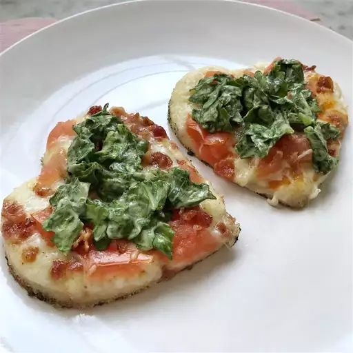

Pizza

Description
This classic BLT pizza is made with bacon and tomatoes baked onto
a pizza crust, then topped with seasoned with shredded lettuce makes
an unforgettably fun meal.
Ingredients
Makes four serving
-
4 sliced of bacon
-
1 (10 ounce) can refrigerated pizza crust dough
-
1 teaspoon olive oil
-
2 cups mozzarella cheese, shredded
-
1 tomato, chopped
-
2 cups shredded iceberg lettuce
-
salt and pepper to taste
Steps
-
Preheat the oven to 375 degrees F (190 degrees C),
or according to package directions for pizza dough.
-
Place bacon in a heavy skillet over medium-high; fry until browned,
but not crisp. Drain on paper towels.
-
Stretch pizza dough out over a pizza ston, pan, or cookie sheet. Brush dough
with olive oil. Spread mozzarella cheese over crust and arrange tomatoes on top.
chop bacon and sprinkle evenly over pizza.
-
Bake pizza for 10 to 15 minutes in the preheated over, until crust is goldn and
chesse is melted in the center. Meanwhile, toss shredded lettuce; season lightly
with salt and pepper. top finished pizza with dressed lettuce and serve.
Home
Original Source